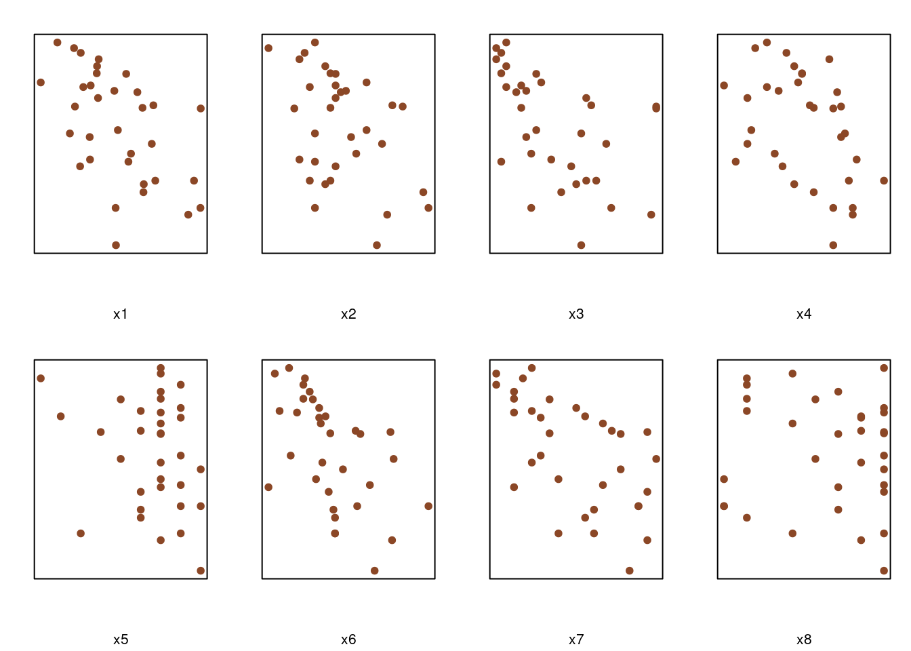
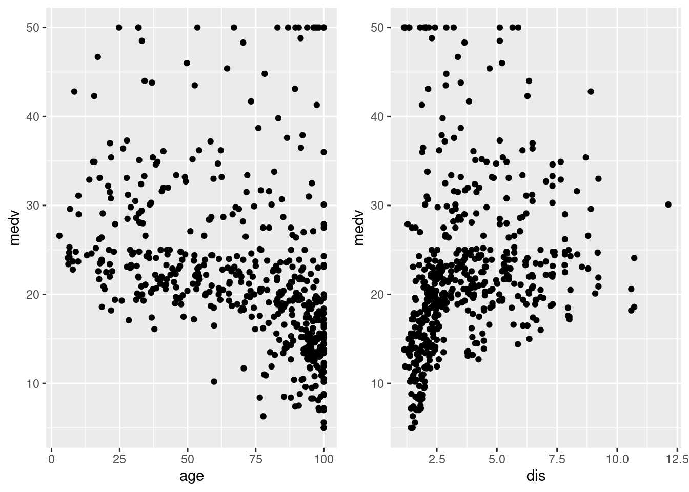

Bayesian Analysis
1 Regression and Variable Selection
1.1 Classical Least Squares Estimator
毛毛虫数据集是从 1973 年对松林毛虫的研究中提取的：它评估了一些森林聚落特征对毛毛虫群落发展的影响。响应变量是在 500 平方米（对应于毛虫的最后一列）面积内每棵树的平均毛虫巢数的对数变换。在 n = 33 个区域上定义了 p = 8 个潜在的解释变量， x1 是海拔（米），x2 是坡度（度），x3 是该地区的松树数量，x4 是在中心采样的树的高度（米）区域，x5 是该区域的方向（从 1 如果向南则为 2，否则为 2），x6 是优势树的高度（以米为单位），x7 是植被层数，x8 是混合沉降指数（如果是从 1如果混合，则不混合为 2）。回归分析的目标是确定哪些解释变量对巢的数量有很大影响，以及这些影响如何相互重叠。
For caterpillar, where \(n=33\) and \(p=8\), we thus assume that the expected lognumber \(y_{i}\) of caterpillar nests per tree over an area is modeled as a linear combination of an intercept and eight predictor variables \((i=1, \ldots, n)\),
\[ \mathbb{E}\left[y_{i} \mid \alpha, \boldsymbol{\beta}, \sigma^{2}\right]=\alpha+\sum_{j=1}^{8} \beta_{j} x_{i j} \]
library(bayess)
# Demo code https://rdrr.io/cran/bayess/f/
data(caterpillar)
y=log(caterpillar$y)
X=as.matrix(caterpillar[,1:8])
vnames=names(caterpillar)
par(mfrow=c(2,4),mar=c(4.2,2,2,1.2))
for (i in 1:8) plot(X[,i],y,xlab=vnames[i],pch=19, col="sienna4",xaxt="n",yaxt="n")
S=readline(prompt="Type <Return> to continue : ")## Type <Return> to continue :The parameter \(\boldsymbol{\beta}\) can obviously be estimated via maximum likelihood estimation. In order to avoid non-identifiability and uniqueness problems, we assume that \(\left[\mathbf{1}_{n} \quad \mathbf{X}\right]\) is of full \(\operatorname{rank}\), that is, \(\operatorname{rank}\left[\mathbf{1}_{n} \quad \mathbf{X}\right]=p+1\). This also means that there is no redundant structure among the explanatory variables. We suppose in addition that \(p+\) \(1<n\) in order to obtain well-defined estimates for all parameters.
The likelihood \(\ell\left(\alpha, \boldsymbol{\beta}, \sigma^{2} \mid \mathbf{y}\right)\) of the standard normal linear model is provided by the following matrix representation: \[ \frac{1}{\left(2 \pi \sigma^{2}\right)^{n / 2}} \exp \left\{-\frac{1}{2 \sigma^{2}}\left(\mathbf{y}-\alpha \mathbf{1}_{n}-\mathbf{X} \boldsymbol{\beta}\right)^{\mathrm{T}}\left(\mathbf{y}-\alpha \mathbf{1}_{n}-\mathbf{X} \boldsymbol{\beta}\right)\right\} \] The maximum likelihood estimators of \(\alpha\) and \(\boldsymbol{\beta}\) are then the solution of the (least squares) minimization problem \[ \begin{array}{l} \min _{\alpha, \boldsymbol{\beta}}\left(\mathbf{y}-\alpha \mathbf{1}_{n}-\mathbf{X} \boldsymbol{\beta}\right)^{\mathrm{T}}\left(\mathbf{y}-\alpha \mathbf{1}_{n}-\mathbf{X} \boldsymbol{\beta}\right) \\ \quad=\min _{\alpha, \boldsymbol{\beta}} \sum_{i=1}^{n}\left(y_{i}-\alpha-\beta_{1} x_{i 1}-\ldots-\beta_{p} x_{i p}\right)^{2} \end{array} \] We get solutions \[ \hat{\alpha}=\overline{\mathbf{y}}, \quad \hat{\boldsymbol{\beta}}=\left(\mathbf{X}^{\top} \mathbf{X}\right)^{-1} \mathbf{X}^{\top}(\mathbf{y}-\bar{y}) \]
best linear unbiased estimator
(see, e.g., Christensen, 2002) states that \((\hat{\alpha}, \hat{\beta})\) is the best linear unbiased estimator of \((\alpha, \beta)\). This means that, for all \(a \in \mathbb{R}^{p+1}\), and with the abuse of notation that, here, \((\hat{\alpha}, \hat{\beta})\) represents a column vector, \[ \mathbb{V}\left(a^{\top}(\hat{\alpha}, \hat{\beta}) \mid \alpha, \boldsymbol{\beta}, \sigma^{2}\right) \leq \mathbb{V}\left(a^{\top}(\tilde{\alpha}, \tilde{\beta}) \mid \alpha, \boldsymbol{\beta}, \sigma^{2}\right) \] for any unbiased linear estimator \((\tilde{\alpha}, \tilde{\beta})\) of \((\alpha, \beta)\).
An unbiased estimator of \(\sigma^{2}\) is \[ \hat{\sigma}^{2}=\frac{1}{n-p-1}\left(\mathbf{y}-\hat{\alpha} \mathbf{1}_{n}-\mathbf{X} \hat{\boldsymbol{\beta}}\right)^{\top}\left(\mathbf{y}-\hat{\alpha} \mathbf{1}_{n}-\mathbf{X} \hat{\boldsymbol{\beta}}\right)=\frac{s^{2}}{n-p-1} \] and \(\hat{\sigma}^{2}\left(\mathbf{X}^{\top} \mathbf{X}\right)^{-1}\) approximates the covariance matrix of \(\hat{\boldsymbol{\beta}}\). Note that the MLE of \(\sigma^{2}\) is \(\operatorname{not} \hat{\sigma}^{2}\) but \(\tilde{\sigma}^{2}=s^{2} / n\)
X=scale(X)
summary(lm(y~X))
# S=readline(prompt="Type <Return> to continue : ")1.2 The Jeffreys Prior Analysis
Considering only the case of a complete lack of prior information on the parameters of the linear model, we first describe a noninformative solution based on the Jeffreys prior. It is rather easy to show that the Jeffreys prior in this case is \[ \pi^{J}\left(\alpha, \boldsymbol{\beta}, \sigma^{2}\right) \propto \sigma^{-2} \] which is equivalent to a flat prior on \(\left(\alpha, \boldsymbol{\beta}, \log \sigma^{2}\right)\).
We could deduce the following (conditional and marginal) posterior distributions
\[ \begin{aligned} \alpha \mid \sigma^{2}, \mathbf{y} \sim \mathscr{N} &\left(\hat{\alpha}, \sigma^{2} / n\right) \\ \boldsymbol{\beta} \mid \sigma^{2}, \mathbf{y} & \sim \mathscr{N}_{p}\left(\hat{\boldsymbol{\beta}}, \sigma^{2}\left(\mathbf{X}^{\top} \mathbf{X}\right)^{-1}\right) \\ \sigma^{2} \mid \mathbf{y} & \sim \mathscr{I} \mathscr{G}\left((n-p-1) / 2, s^{2} / 2\right) \end{aligned} \]
The corresponding Bayesian estimates of \(\alpha, \boldsymbol{\beta}\) and \(\sigma^{2}\) are thus given by \[ \mathbb{E}^{\pi}[\alpha \mid \mathbf{y}]=\hat{\alpha}, \quad \mathbb{E}^{\pi}[\boldsymbol{\beta} \mid \mathbf{y}]=\hat{\boldsymbol{\beta}} \quad \text { and } \quad \mathbb{E}^{\pi}\left[\sigma^{2} \mid \mathbf{y}\right]=\frac{s^{2}}{n-p-3} \] respectively. Unsurprisingly, the Jeffreys prior estimate of \(\alpha\) is the empirical mean. Further, the posterior expectation of \(\boldsymbol{\beta}\) is the maximum likelihood estimate. Note also that the Jeffreys prior estimate of \(\sigma^{2}\) is larger (and thus more pessimistic) than both the maximum likelihood estimate \(s^{2} / n\) and the classical unbiased estimate \(s^{2} /(n-p-1)\).
不出所料，Jeffreys 对 \(\alpha\) 的先验估计是经验平均值。 此外，\(\boldsymbol{\beta}\) 的后验期望是最大似然估计。 另请注意，Jeffreys 对 \(\sigma^{2}\) 的先验估计比最大似然估计 \(s^{2}/n\) 和经典无偏估计 \(s^{2}\) 更大（因此更悲观） \(/(np-1)\)。
1.3 Zellner’s G-prior analysis
Zellner提出的一种不同的非信息性方法，用于从贝叶斯角度处理线性回归。 这种方法是一种中间观点，其中一些关于 β 的先验信息可能可用，它被称为 Zellner 的 G-prior，“G”是 Zellner 在先验方差中使用的符号。
Semi-noninformative Solution
虑到线性回归模型的自然共轭先验具有严重的局限性，需要更精细的策略。 Zellner 的 G-prior 建模的核心思想是允许实验者引入（可能很弱）关于回归位置参数的信息，但绕过先验规范中最困难的方面，即先验相关结构的推导.这个结构在 Zellner 的提议中是固定的. Zellner 的 G-prior 因此被分解为 β 的（条件）高斯先验和 (α, σ2) 的inproper (Jeffreys) 先验。
We could deduce that, conditionally on \(\mathbf{y}, \mathbf{X}\) and \(\sigma^{2}\), the parameters \(\alpha\) and \(\boldsymbol{\beta}\) are independent and such that \[ \begin{array}{c} \alpha \mid \sigma^{2}, \mathbf{y} \sim \mathscr{N}_{1}\left(\overline{\mathbf{y}}, \sigma^{2} / n\right) \\ \boldsymbol{\beta} \mid \mathbf{y}, \sigma^{2} \sim \mathscr{N}_{p}\left(\frac{g}{g+1}(\hat{\boldsymbol{\beta}}+\mathbf{X} \tilde{\boldsymbol{\beta}} / g), \frac{\sigma^{2} g}{g+1}\left\{\mathbf{X}^{\mathrm{T}} \mathbf{X}\right\}^{-1}\right) \end{array} \] where \(\hat{\boldsymbol{\beta}}=\left\{\mathbf{X}^{\mathrm{T}} \mathbf{X}\right\}^{-1} \mathbf{X}^{\mathrm{T}} \mathbf{y}\) is the maximum likelihood (and least squares) estimator of \(\boldsymbol{\beta}\). The posterior independence between \(\alpha\) and \(\boldsymbol{\beta}\) is due to the fact that \(\mathbf{X}\) is centered and that \(\alpha\) and \(\boldsymbol{\beta}\) are a priori independent. Moreover, the posterior distribution of \(\sigma^{2}\) is given by \[ \sigma^{2} \mid \mathbf{y} \sim I \mathscr{G}\left[(n-1) / 2, s^{2}+(\tilde{\boldsymbol{\beta}}-\hat{\boldsymbol{\beta}})^{\mathrm{T}} \mathbf{X}^{\mathrm{T}} \mathbf{X}(\tilde{\boldsymbol{\beta}}-\hat{\boldsymbol{\beta}}) /(g+1)\right] \] where \(I \mathscr{G}(a, b)\) is an inverse Gamma distribution with mean \(b /(a-1)\) and where \(s^{2}=\left(\mathbf{y}-\overline{\mathbf{y}} \mathbf{1}_{n}-\mathbf{X} \hat{\boldsymbol{\beta}}\right)^{\mathrm{T}}\left(\mathbf{y}-\overline{\mathbf{y}} \mathbf{1}_{n}-\mathbf{X} \hat{\boldsymbol{\beta}}\right)\) corresponds to the (classical) residual sum of squares.
library(bayess)
# Demo code https://rdrr.io/cran/bayess/f/
# postmeancoeff posterior mean of the regression coefficients
# postsqrtcoeff posterior standard deviation of the regression coefficients
# log10bf log-Bayes factors against the full model
# postmeansigma2 posterior mean of the variance of the model
# postvarsigma2 posterior variance of the variance of the model
data(faithful)
BayesReg(faithful[,1],faithful[,2])##
## PostMean PostStError Log10bf EvidAgaH0
## Intercept 3.4878 0.0304
## x1 1.0225 0.0303 Inf (****)
##
##
## Posterior Mean of Sigma2: 0.2513
## Posterior StError of Sigma2: 0.3561## $postmeancoeff
## [1] 3.487783 1.022509
##
## $postsqrtcoeff
## [1] 0.03039825 0.03034252
##
## $log10bf
## [,1]
## [1,] Inf
##
## $postmeansigma2
## [1] 0.2513425
##
## $postvarsigma2
## [1] 0.12681762 Bayesian Linear Regression using rstanarm
2.1 Classical Linear Regression Model
Classical linear regression, often referred to as ordinary least squares (OLS) regression, estimates the parameters of the model by minimizing the sum of the squared differences between observed values and those predicted by the linear model.
- Parameter Estimation: It provides point estimates for the parameters (intercepts and slopes) that define a line of best fit through the data.
- Assumptions: Assumes residuals are normally distributed, independent, and have constant variance.
- Inference: Statistical inference, such as hypothesis testing and confidence intervals, relies on frequency-based methods. These methods often involve assumptions about the distributions of parameters or error terms (e.g., normally distributed errors).
- Uncertainty: Uncertainty in parameter estimates is typically represented through confidence intervals and p-values, which depend on assumptions of normality and sample size.
# suppressPackageStartupMessages(library(rstanarm))
# suppressPackageStartupMessages(library(bayestestR))
# suppressPackageStartupMessages(library(bayesplot))
# suppressPackageStartupMessages(library(insight))
# use the BostonHousing data from mlbench package
# library(mlbench)
data("BostonHousing")
str(BostonHousing)## 'data.frame': 506 obs. of 14 variables:
## $ crim : num 0.00632 0.02731 0.02729 0.03237 0.06905 ...
## $ zn : num 18 0 0 0 0 0 12.5 12.5 12.5 12.5 ...
## $ indus : num 2.31 7.07 7.07 2.18 2.18 2.18 7.87 7.87 7.87 7.87 ...
## $ chas : Factor w/ 2 levels "0","1": 1 1 1 1 1 1 1 1 1 1 ...
## $ nox : num 0.538 0.469 0.469 0.458 0.458 0.458 0.524 0.524 0.524 0.524 ...
## $ rm : num 6.58 6.42 7.18 7 7.15 ...
## $ age : num 65.2 78.9 61.1 45.8 54.2 58.7 66.6 96.1 100 85.9 ...
## $ dis : num 4.09 4.97 4.97 6.06 6.06 ...
## $ rad : num 1 2 2 3 3 3 5 5 5 5 ...
## $ tax : num 296 242 242 222 222 222 311 311 311 311 ...
## $ ptratio: num 15.3 17.8 17.8 18.7 18.7 18.7 15.2 15.2 15.2 15.2 ...
## $ b : num 397 397 393 395 397 ...
## $ lstat : num 4.98 9.14 4.03 2.94 5.33 ...
## $ medv : num 24 21.6 34.7 33.4 36.2 28.7 22.9 27.1 16.5 18.9 ...bost <- BostonHousing[,c("medv","age","dis","chas")]
summary(bost)## medv age dis chas
## Min. : 5.00 Min. : 2.90 Min. : 1.130 0:471
## 1st Qu.:17.02 1st Qu.: 45.02 1st Qu.: 2.100 1: 35
## Median :21.20 Median : 77.50 Median : 3.207
## Mean :22.53 Mean : 68.57 Mean : 3.795
## 3rd Qu.:25.00 3rd Qu.: 94.08 3rd Qu.: 5.188
## Max. :50.00 Max. :100.00 Max. :12.127# Classical linear regression model
model_freq<-lm(medv~., data=bost)
# library("broom")
tidy(model_freq) %>%
kable("html") %>%
kable_styling(bootstrap_options = c("striped", "hover"))| term | estimate | std.error | statistic | p.value |
|---|---|---|---|---|
| (Intercept) | 32.7397914 | 2.2470461 | 14.5701467 | 0.0000000 |
| age | -0.1427996 | 0.0198104 | -7.2083181 | 0.0000000 |
| dis | -0.2461603 | 0.2651369 | -0.9284273 | 0.3536322 |
| chas1 | 7.5129712 | 1.4646565 | 5.1295106 | 0.0000004 |
# # Bayesian regression
# library(rstanarm)
# https://www.r-bloggers.com/2020/04/bayesian-linear-regression/2.2 Examining and visualizing data

2.3 Bayesian Linear Regression
Bayesian linear regression, on the other hand, incorporates prior beliefs about parameters and updates these beliefs after observing the data. This approach is fundamentally probabilistic:
- Parameter Estimation: Instead of offering single point estimates, Bayesian regression produces a probability distribution (posterior distribution) for each parameter. This reflects all possible values of the parameters weighted by their likelihood given the prior belief and the observed data.
- Prior Knowledge: It starts with a prior distribution on the parameters, which can encode existing knowledge or assumptions about the values they might take.
- Inference: Bayesian inference doesn’t depend on large-sample theory. Instead, it calculates the probability of a parameter value given the data. This is often done via Markov Chain Monte Carlo (MCMC) methods or other numerical techniques for more complex models.
- Uncertainty and Prediction: Provides a richer understanding of uncertainty by using the full posterior distribution of the parameters. Predictive distributions for new data can be directly derived from the posterior.
Practical Differences:
- Flexibility: Bayesian methods are typically more flexible in incorporating prior information and dealing with complex models where traditional methods may not provide feasible solutions or require cumbersome calculations.
- Computation: Classical methods are generally less computationally intensive compared to Bayesian methods, which may require complex computational techniques (like MCMC) to approximate the posterior distributions, especially in models with a large number of parameters or complex prior distributions.
- Interpretation: Bayesian inference provides a more intuitive probabilistic interpretation of model results, which can be particularly useful in decision-making contexts where probabilities of different outcomes need to be evaluated.
rstanarm::stan_glm - fit the model
To fit a Bayesian regression, we use the function stan_glm from the rstanarm package. This function as the above lm function requires providing the formula and the data that will be used, and leave all the following arguments with their default values:
- family : by default this function uses the gaussian distribution as we do with the classical glm function to perform lm model.
- prior : The prior distribution for the regression coefficients, By default the normal prior is used. There are subset of functions used for the prior provided by rstanarm like , student t family, laplace family…ect. To get the full list with all the details run this command ?priors. If we want a flat uniform prior we set this to NULL.
- prior_intercept: prior for the intercept, can be normal, student_t , or cauchy. If we want a flat uniform prior we set this to NULL.
- prior_aux: prior fo auxiliary parameters such as the error standard deviation for the gaussion family.
- algorithm: The estimating approach to use. The default is “sampling MCMC1.
- QR: FALSE by default, if true QR decomposition applied on the design matrix if we have large number of predictors.
- iter : is the number of iterations if the MCMC method is used, the default is 2000.
- chains : the number of Markov chains, the default is 4.
- warmup : also known as burnin, the number of iterations used for adaptation, and should not be used for inference. By default it is half of the iterations.
# library("rstanarm")
model_bayes <- stan_glm(medv~., data=bost, seed=111)##
## SAMPLING FOR MODEL 'continuous' NOW (CHAIN 1).
## Chain 1:
## Chain 1: Gradient evaluation took 6.7e-05 seconds
## Chain 1: 1000 transitions using 10 leapfrog steps per transition would take 0.67 seconds.
## Chain 1: Adjust your expectations accordingly!
## Chain 1:
## Chain 1:
## Chain 1: Iteration: 1 / 2000 [ 0%] (Warmup)
## Chain 1: Iteration: 200 / 2000 [ 10%] (Warmup)
## Chain 1: Iteration: 400 / 2000 [ 20%] (Warmup)
## Chain 1: Iteration: 600 / 2000 [ 30%] (Warmup)
## Chain 1: Iteration: 800 / 2000 [ 40%] (Warmup)
## Chain 1: Iteration: 1000 / 2000 [ 50%] (Warmup)
## Chain 1: Iteration: 1001 / 2000 [ 50%] (Sampling)
## Chain 1: Iteration: 1200 / 2000 [ 60%] (Sampling)
## Chain 1: Iteration: 1400 / 2000 [ 70%] (Sampling)
## Chain 1: Iteration: 1600 / 2000 [ 80%] (Sampling)
## Chain 1: Iteration: 1800 / 2000 [ 90%] (Sampling)
## Chain 1: Iteration: 2000 / 2000 [100%] (Sampling)
## Chain 1:
## Chain 1: Elapsed Time: 0.088 seconds (Warm-up)
## Chain 1: 0.121 seconds (Sampling)
## Chain 1: 0.209 seconds (Total)
## Chain 1:
##
## SAMPLING FOR MODEL 'continuous' NOW (CHAIN 2).
## Chain 2:
## Chain 2: Gradient evaluation took 1.4e-05 seconds
## Chain 2: 1000 transitions using 10 leapfrog steps per transition would take 0.14 seconds.
## Chain 2: Adjust your expectations accordingly!
## Chain 2:
## Chain 2:
## Chain 2: Iteration: 1 / 2000 [ 0%] (Warmup)
## Chain 2: Iteration: 200 / 2000 [ 10%] (Warmup)
## Chain 2: Iteration: 400 / 2000 [ 20%] (Warmup)
## Chain 2: Iteration: 600 / 2000 [ 30%] (Warmup)
## Chain 2: Iteration: 800 / 2000 [ 40%] (Warmup)
## Chain 2: Iteration: 1000 / 2000 [ 50%] (Warmup)
## Chain 2: Iteration: 1001 / 2000 [ 50%] (Sampling)
## Chain 2: Iteration: 1200 / 2000 [ 60%] (Sampling)
## Chain 2: Iteration: 1400 / 2000 [ 70%] (Sampling)
## Chain 2: Iteration: 1600 / 2000 [ 80%] (Sampling)
## Chain 2: Iteration: 1800 / 2000 [ 90%] (Sampling)
## Chain 2: Iteration: 2000 / 2000 [100%] (Sampling)
## Chain 2:
## Chain 2: Elapsed Time: 0.077 seconds (Warm-up)
## Chain 2: 0.105 seconds (Sampling)
## Chain 2: 0.182 seconds (Total)
## Chain 2:
##
## SAMPLING FOR MODEL 'continuous' NOW (CHAIN 3).
## Chain 3:
## Chain 3: Gradient evaluation took 1.5e-05 seconds
## Chain 3: 1000 transitions using 10 leapfrog steps per transition would take 0.15 seconds.
## Chain 3: Adjust your expectations accordingly!
## Chain 3:
## Chain 3:
## Chain 3: Iteration: 1 / 2000 [ 0%] (Warmup)
## Chain 3: Iteration: 200 / 2000 [ 10%] (Warmup)
## Chain 3: Iteration: 400 / 2000 [ 20%] (Warmup)
## Chain 3: Iteration: 600 / 2000 [ 30%] (Warmup)
## Chain 3: Iteration: 800 / 2000 [ 40%] (Warmup)
## Chain 3: Iteration: 1000 / 2000 [ 50%] (Warmup)
## Chain 3: Iteration: 1001 / 2000 [ 50%] (Sampling)
## Chain 3: Iteration: 1200 / 2000 [ 60%] (Sampling)
## Chain 3: Iteration: 1400 / 2000 [ 70%] (Sampling)
## Chain 3: Iteration: 1600 / 2000 [ 80%] (Sampling)
## Chain 3: Iteration: 1800 / 2000 [ 90%] (Sampling)
## Chain 3: Iteration: 2000 / 2000 [100%] (Sampling)
## Chain 3:
## Chain 3: Elapsed Time: 0.084 seconds (Warm-up)
## Chain 3: 0.111 seconds (Sampling)
## Chain 3: 0.195 seconds (Total)
## Chain 3:
##
## SAMPLING FOR MODEL 'continuous' NOW (CHAIN 4).
## Chain 4:
## Chain 4: Gradient evaluation took 1.4e-05 seconds
## Chain 4: 1000 transitions using 10 leapfrog steps per transition would take 0.14 seconds.
## Chain 4: Adjust your expectations accordingly!
## Chain 4:
## Chain 4:
## Chain 4: Iteration: 1 / 2000 [ 0%] (Warmup)
## Chain 4: Iteration: 200 / 2000 [ 10%] (Warmup)
## Chain 4: Iteration: 400 / 2000 [ 20%] (Warmup)
## Chain 4: Iteration: 600 / 2000 [ 30%] (Warmup)
## Chain 4: Iteration: 800 / 2000 [ 40%] (Warmup)
## Chain 4: Iteration: 1000 / 2000 [ 50%] (Warmup)
## Chain 4: Iteration: 1001 / 2000 [ 50%] (Sampling)
## Chain 4: Iteration: 1200 / 2000 [ 60%] (Sampling)
## Chain 4: Iteration: 1400 / 2000 [ 70%] (Sampling)
## Chain 4: Iteration: 1600 / 2000 [ 80%] (Sampling)
## Chain 4: Iteration: 1800 / 2000 [ 90%] (Sampling)
## Chain 4: Iteration: 2000 / 2000 [100%] (Sampling)
## Chain 4:
## Chain 4: Elapsed Time: 0.084 seconds (Warm-up)
## Chain 4: 0.108 seconds (Sampling)
## Chain 4: 0.192 seconds (Total)
## Chain 4:print(model_bayes, digits = 3)## stan_glm
## family: gaussian [identity]
## formula: medv ~ .
## observations: 506
## predictors: 4
## ------
## Median MAD_SD
## (Intercept) 32.834 2.285
## age -0.143 0.020
## dis -0.258 0.257
## chas1 7.543 1.432
##
## Auxiliary parameter(s):
## Median MAD_SD
## sigma 8.324 0.260
##
## ------
## * For help interpreting the printed output see ?print.stanreg
## * For info on the priors used see ?prior_summary.stanregbayesplot::mcmc_dens - plot the MCMC simulation
The Median estimate is the median computed from the MCMC simulation, and MAD_SD is the median absolute deviation computed from the same simulation. To well understand how getting these outputs, we plot the MCMC simulation of each predictor using bayesplot
# library("bayesplot")
# Generate the first plot for the 'age' parameter
plot1 <- mcmc_dens(model_bayes, pars = "age") +
vline_at(-0.143, color = "red") +
ggtitle("Density of Age") +
theme_minimal()
# Generate the second plot for the 'dis' parameter
plot2 <- mcmc_dens(model_bayes, pars = "dis") +
vline_at(-0.244, color = "red") +
ggtitle("Density of Dis") +
theme_minimal()
# Arrange both plots side by side
grid.arrange(plot1, plot2, ncol = 2)
bayestestR::describe_posterior - model parameters
# library("bayestestR")
describe_posterior(model_bayes)CI : Credible Interval, it is used to quantify the uncertainty about the regression coefficients. There are two methods to compute CI, the highest density interval HDI which is the default, and the Equal-tailed Interval ETI. with 89% probability (given the data) that a coefficient lies above the CI_low value and under CI_high value. This strightforward probabilistic interpretation is completely diffrent from the confidence interval used in classical linear regression where the coefficient fall inside this confidence interval (if we choose 95% of confidence) 95 times if we repeat the study 100 times.
pd (Probability of Direction): Measures the probability that a parameter has a consistent positive or negative effect. It’s akin to checking whether the parameter’s effect is consistently in one direction or another, not merely the magnitude. And it is considered as the best equivalent for the p-value.
ROPE_CI: Region of Practical Equivalence, since bayes method deals with true probabilities, it does not make sense to compute the probability of getting the effect equals zero (the null hypothesis) as a point (probability of a point in continuous intervals equal zero ). Thus, we define instead a small range around zero which can be considered practically the same as no effect (zero), this range therefore is called ROPE. By default (according to Cohen, 1988) The Rope is [-0.1,0.1] from the standardized coefficients.
% in ROPE: Shows the percentage of the posterior distribution that falls within the ROPE, helping to evaluate the practical significance of the effect.
Rhat: The potential scale reduction factor on split chains (Gelman-Rubin statistic). it is computed for each scalar quantity of interest, as the standard deviation of that quantity from all the chains included together, divided by the root mean square of the separate within-chain standard deviations. When this value is close to 1 we do not have any convergence problem with MCMC.
ESS (Effective Sample Size): it captures how many independent draws contain the same amount of information as the dependent sample obtained by the MCMC algorithm, the higher the ESS the better. The threshold used in practice is 400.
Aternatively, we can get the coefficeient estimates (which are the medians by default) separatly by using the package insight.
# library("insight")
post <- get_parameters(model_bayes)
print(purrr::map_dbl(post,median),digits = 3)## (Intercept) age dis chas1
## 32.834 -0.143 -0.258 7.543The mean of the posterior distribution is the expected value of the parameter over its entire plausible range as informed by the data and the prior. It provides a balance point of the distribution. as follows:
print(purrr::map_dbl(post, mean),digits = 3)## (Intercept) age dis chas1
## 32.761 -0.143 -0.248 7.523The values are closer to each other due to the like normality of the distribution of the posteriors where all the central statistics (mean, median, mode) are closer to each other. Using the following plot to visualize the age coefficient using different statistics as follows:
mcmc_dens(model_bayes, pars=c("age"))+
vline_at(median(post$age), col="red")+
vline_at(mean(post$age), col="yellow")+
vline_at(map_estimate(post$age)[1,2], col="green")
2.4 Inferences - Interval
In Bayesian statistics, credible intervals (CIs) are used to represent the probability of a parameter lying within a certain range, given the observed data and prior beliefs. These intervals are critical in understanding the distribution of parameters estimated by Bayesian models. Two common types of credible intervals are the Highest Density Interval (HDI) and the Equal-Tailed Interval (ETI).
As we do with classical regression (frequentist), we can test the significance of the bayesian regression coefficients by checking whether the corresponding credible interval contains zero or not
- If the credible interval (be it HDI or ETI) for a regression coefficient does not include zero, we can say there is substantial evidence that the effect (or association) of that predictor on the response variable is non-zero, and thus “significant” in a practical sense.
- Conversely, if the interval includes zero, the data do not provide strong evidence against the null hypothesis of no association.
1. Highest Density Interval (HDI)
The Highest Density Interval, or HDI, is a range within which a specified proportion of the distribution’s probability mass lies, and where all points within the interval have higher probability density than points outside the interval. For instance, a 95% HDI contains the most credible values of the parameter that account for 95% of the probability mass, and every point inside the interval has a higher probability density than any point outside the interval.
- Key Feature: The HDI is the shortest possible interval for a given coverage probability. This makes it particularly useful for skewed distributions, as it naturally adapts to the shape of the distribution and focuses on the most probable values.
hdi(model_bayes)2.4.1 2. Equal-Tailed Interval (ETI)
The Equal-Tailed Interval is another type of credible interval where each tail of the distribution contains an equal amount of probability mass outside the interval. For a 95% ETI, 2.5% of the distribution’s probability mass lies below the lower bound and 2.5% lies above the upper bound.
- Key Feature: The ETI is straightforward and intuitive, mirroring the concept of frequentist confidence intervals. It does not necessarily contain the most probable values (like the HDI does) but is easier to compute and interpret for symmetric distributions.
eti(model_bayes)Note: this similar result between frequentist and bayesian regression may due to the normality assumption for the former that is well satisfied which gives satisfied results and due to the normal prior used in the latter. However, in real world it is less often to be sure about the normality assumption which may give contradict conclusions between the two approaches.
2.5 Inferences - Check part of the credible interval that falls inside the ROPE
Indeed, the Region of Practical Equivalence (ROPE) offers another way to assess the significance of regression coefficients in a Bayesian framework. This method is complementary to examining whether the credible intervals contain zero. The ROPE technique allows for a more nuanced interpretation of results, particularly when you need to decide if an effect is not only different from zero but also small enough to be considered practically insignificant.
The ROPE is a predefined range around zero (e.g., \([-0.1, 0.1]\)) within which effects are considered negligible or practically equivalent to zero. This concept is based on the idea that not all statistically significant findings are practically significant. By defining a small interval around zero, researchers can identify parameters whose effects, while possibly statistically distinct from zero, are so small that they do not matter in practical terms.
- High Percentage in ROPE: If a large portion of the posterior distribution of a parameter is within the ROPE, this suggests that the parameter’s effect is practically negligible.
- Low Percentage in ROPE: Conversely, if only a small portion of the posterior distribution falls within the ROPE, this suggests that the parameter’s effect is practically significant.
rope(post$age)rope(post$chas1)rope(post$`(Intercept)`)rope(post$dis)2.6 Inferences - PD and P-value
The concept of Probability of Direction (pd) in Bayesian analysis is critical for understanding the directionality of effects in a model. It provides a straightforward interpretation of how likely it is that a parameter has a consistent positive or negative effect, based on the posterior distribution. This is particularly useful when the primary interest is in the direction rather than the magnitude or statistical significance of an effect.
Probability of Direction (pd): This metric measures the proportion of the posterior distribution that is either above or below zero (depending on the sign of the median). A pd close to 1 indicates that nearly all of the posterior distribution is on one side of zero, suggesting a consistent effect direction. Conversely, a pd close to 0.5 suggests that the posterior is spread around zero, indicating less certainty about the direction of the effect.
Connection to P-values: In frequentist statistics, the p-value measures the probability of observing data at least as extreme as the data actually observed, under the assumption that the null hypothesis (typically, that there is no effect) is true. In a Bayesian context, while p-values are not directly used, there is an analogous concept where the p-value can be approximated from the pd as \(p\text{-value} = 1 - pd\) for one-sided tests. This approximation gives a sense of how often the observed effect would occur by chance if the null hypothesis were true.
3 Item Response Theory
3.1 Item response theory
IRT (item response theory 项目反映理论) 楻型。IRT模型用来描述被试者能力和项目特性之间的关系。在现实生活中，由于 被试者的能力不能通过可观测的数据进行描述，所以IRT楛型用一个潛变量 \(\theta\) 来表示，并考虑与项目相关的一组参数来分析正确回答 测试项目的概率。目前常见的IRT楛型有2-PL楻型和3-PL楻型。其具体表达式如下:
two-parameter logistic (2-PL) Model
2-PL楻型的表达式如下: \[ p_{i, j}\left(\theta_{i}\right)=\frac{1}{1+\exp \left[-D a_{j}\left(\theta_{i}-b_{j}\right)\right]} \] 其种 \(\theta_{i}\) 是被试者能力的参数， \(a_{j}\) 和 \(b_{j}\) 分别代表的是题目的区分度参数和难度参数，D是为 \(1.7\) 的常数。
3-PL Model
3-PL模型是在模型中引入了预测参数 \(c_{j}\) ，该参数的含义是描述被试者在没有任何先验知识的情况下，回答正确某项目的概率。 常见的例子有学生在做选择题时，即使对该问题没有任何相关知识的获取，也有一定的概率答对该题目。 3-PL模型的表达式如下: \[ p_{i, j}\left(\theta_{i}\right)=c_{j}+\frac{1-c_{j}}{1+\exp \left[-D a_{j}\left(\theta_{i}-b_{j}\right)\right]} \] \(c_{j}\) 表示的是预测参数，其余的参数含义和2-PL模型中的一致。
Assumptions
IRT模型满足三条基本假设：
- 潜在单调性，IRT㮛型是连续严格单调的函数。
- 条件独立性，IRT模型认为给定 \(\theta_{i}\) ，对于第 \(i\) 个被试者， \(Y_{i, j}\) 是独立的; 而对于不同的被试者，其各自的答莞 \(Y_{i}\) 也是相互独 立的。
- 单维性假设，IRT模型认为某个测试的所有项目都是测量同一个潜在特质。
3.2 EM algorithm
极大似然估计是利用已知的样本结果，去反推最有可能（最大概率）导致这样结果的参数值，也就是在给定的观测变量下去估计参数值。然而现实中可能存在这样的问题，除了观测变量之外，还存在着未知的隐变量，因为变量未知，因此无法直接通过最大似然估计直接求参数值。EM算法是一种迭代算法，用于含有隐变量的概率模型的极大似然估计，或者说是极大后验概率估计。
引入一个例子来说明隐变量存在的问题。假设有3枚硬币，分别记作A，B，C。这些硬币正面出现的概率分别是π，p，q。我们的实验过程如下，先投掷硬币A，根据其结果选出硬币B和硬币C，正面选B，反面选C；然后投掷选出的硬币，此时出现正面记作1，出现反面记作0。在这个例子中我们观察到的变量只是B或者C的结果，而对A的结果并不知道，在这里A的结果也就是我们的隐变量。A的结果对最终的结果是有影响的，因此在估计参数时必须将A的结果考虑进去。
我们将观测变量表示为\(\mathrm{Y}=\left(\mathrm{Y}_{1}, \mathrm{Y}_{2}, \ldots, \mathrm{Y}_{\mathrm{n}}\right)\), 隐变量表示为\(\mathrm{Z}=\left(\mathrm{Z} 1, \mathrm{Z}_{2}, \ldots, \mathrm{Z}_{\mathrm{n}}\right)\), 则观测数据的似然函数可以表示为 \(P(Y \mid \theta)=\sum_{\mathrm{Z}} P(Z \mid \theta) P(Y \mid Z, \theta)\)
在这里 \(P(Y \mid \theta)\) 是 \(P(Y, Z \mid \theta)\) 的边缘概率，通过转换后可以表示成右边的形式，我们将其转换成对数形式，这样便于求联合概率 \[ \begin{aligned} L(\theta) &=\log P(Y \mid \theta)=\log \sum_{Z} P(Y, Z \mid \theta) \\ &=\log \left(\sum_{Z} P(Y \mid Z, \theta) P(Z \mid \theta)\right) \end{aligned} \] 然而对于这样的式子直接根据极大化求 \(\theta\) 的值是很困难的，因为这里还存在隐变量 \(\mathrm{Z}\) ，在这里引入 \(\mathrm{EM}\) 算法，通过迭代求解，假设 在第i 次迭代后 \(\theta\) 的估计值为 \(\theta^{(i)}\) 。我们希望新估计值能是 \(L(\theta)\) 增加，通过迭代逐步的达到最大值。为此我们考豦第 \(+1\) 步迭代后两者的 差: \[ L(\theta)-L\left(\theta^{(i)}\right)=\log \left(\sum_{Z} P(Y \mid Z, \theta) P(Z \mid \theta)\right)-\log P\left(Y \mid \theta^{(i)}\right) \] 利用Jensen不等式将上述式子展开并得到其下界（对数函数是凹函数）： \[ \begin{aligned} L(\theta)-L\left(\theta^{(i)}\right) &=\log \left(\sum_{Z} P\left(Y \mid Z, \theta^{(i)}\right) \frac{P(Y \mid Z, \theta) P(Z \mid \theta)}{P\left(Y \mid Z, \theta^{(i)}\right)}\right)-\log P\left(Y \mid \theta^{(i)}\right) \\ & \geqslant \sum_{Z} P\left(Z \mid Y, \theta^{(i)}\right) \log \frac{P(Y \mid Z, \theta) P(Z \mid \theta)}{P\left(Z \mid Y, \theta^{(i)}\right)}-\log P\left(Y \mid \theta^{(i)}\right) \\ &=\sum_{Z} P\left(Z \mid Y, \theta^{(i)}\right) \log \frac{P(Y \mid Z, \theta) P(Z \mid \theta)}{P\left(Z \mid Y, \theta^{(i)}\right) P\left(Y \mid \theta^{(i)}\right)} \end{aligned} \] \[ B\left(\theta, \theta^{(i)}\right) \triangleq L\left(\theta^{(i)}\right)+\sum_{Z} P\left(Z \mid Y, \theta^{(i)}\right) \log \frac{P(Y \mid Z, \theta) P(Z \mid \theta)}{P\left(Z \mid Y, \theta^{(i)}\right) P\left(Y \mid \theta^{(i)}\right)} \] 则有 \[ L(\theta) \geqslant B\left(\theta, \theta^{(i)}\right) \] 在这里 \(B\left(\theta, \theta^{(i)}\right)\) 是 \(L(\theta)\) 的一个下界，而且由的表达式可知 \[ L\left(\theta^{(i)}\right)=B\left(\theta^{(i)}, \theta^{(i)}\right) \]
因此任何能使得 \(B\left(\theta, \theta^{(i)}\right)\) 増大的 \(\theta\) ，也能使得 \(L(\theta)\) 增大。因此求 \(\theta\) 值使得 \(B\left(\theta, \theta^{(i)}\right)\) 增大就可以转变成求 \(\theta\) 使得 \(L(\theta)\) 增大，即求 \(\theta^{(i+1)}=\arg \max _{\theta} B\left(\theta, \theta^{(i)}\right)\) 将上述式子展开可得 (在这里去掉常数项，因为常数项不会影响最终的结果) \[ \begin{aligned} \theta^{(i+1)} &=\arg \max _{\theta}\left(L\left(\theta^{(i)}\right)+\sum_{Z} P\left(Z \mid Y, \theta^{(i)}\right) \log \frac{P(Y \mid Z, \theta) P(Z \mid \theta)}{P\left(Z \mid Y, \theta^{(i)}\right) P\left(Y \mid \theta^{(i)}\right)}\right) \\ &=\arg \max _{\theta}\left(\sum_{Z} P\left(Z \mid Y, \theta^{(i)}\right) \log (P(Y \mid Z, \theta) P(Z \mid \theta))\right) \\ &=\arg \max _{\theta}\left(\sum_{Z} P\left(Z \mid Y, \theta^{(i)}\right) \log P(Y, Z \mid \theta)\right) \\ &=\arg \max _{\theta} Q\left(\theta, \theta^{(i)}\right) \end{aligned} \] 因此问题就演变成了求 \(Q\) 函数的极大化。EM算法的整体思路就是初始化 \(\theta\) 的值为 \(\theta^{(0)}\) ，然后通过迭代去求得最终的 \(\theta\) 值，迭代的终 条件应该是 \(L(\theta)\) 的增加不明显 (具体可以设定一个增加值来控制) 。 下面的图可以形象的表示EM算法的迭代更新过程
 EM算法分为 E步和 M步
EM算法分为 E步和 M步
- E步：计算联合分布的条件概率期望。
- M步：极大化对数似然函数的条件期望求解参数
For 2-PL Model
- 观测数据: 我们把被试者 \(i\) 对项目 \(j\) 的作答反映记为 \(y_{i, j}\) ，又记向量 \(y_{i}=\left(y_{i 1}, y_{i 2}, \ldots \ldots, y_{i m}\right)\) ，称为观测数据，其中 \(i=1,2, \ldots, N, j=1,2, \ldots, m\) 。对于两级计分模型（在这里我们只考虑两级计分模型，即模型输出的结果只有二分类）， \(y_{i j}\) 的取值有 0 和 1 ，分别表示被试者答错和答对题目。除了两级计分模型，还会有多级计分模型（即输出的结果为多分类）。
- 隐变量 (缺失数据) : 我们把每个被试者的潜在的不可观测的能力值称为缺失数据，记为 \(\theta=\left(\theta_{1}, \theta_{2}, \ldots \ldots, \theta_{N}\right) ，\) 其中 \(\theta_{i}\) 是被试者 \(i\) 的暳在能力值。
- 完全数据: 完全数据对每一个被试者来说就是观宗数据加缺失数据，记作 \(\left[\left(y_{1}, \theta_{1}\right),\left(y_{2}, \theta_{2}\right), \ldots,\left(y_{N}, \theta_{N}\right)\right]\) 。
将EM算法应用到IRT模型中来，则E步和M步可以描述为：
- E步：即在给定缺失数据的分布，观察数据和参数初值时，求完全数据的对数似然函数的条件期望。
- M步：即使用E步计算出的完全数据充分统计量的条件期望值，极大化完全数据的对数似然函数的条件期望求解参数的值。
- 不断的循环迭代E步和M步，直到参数估计收敛。
在IRT模型当中，我们通常认为能力参数 \(\theta\) 是连续随机变量，故可以取任意值。在EM算法估计参数的过程中，我们是能力参数 \(\theta\) 为离散分布。能力值只能取 \(q_{1}, q_{2}, \ldots \ldots, q_{K}, \mathrm{~K}\) 个值中的一个，且 \(P\left(\theta=q_{k}\right)=\pi_{k}\) 。 在给定了反应矩阵 \(Y\) 的情况下，假设项目参数 \(\Delta=\left[\delta_{1}, \ldots \ldots, \delta_{J}\right]\) ，能力分布参数 \(\pi=\left(\Pi_{1}, \ldots \ldots, \Pi_{K}\right)\) 。则E步中计 算的条件期望推到如下: \[ \begin{aligned} Q\left(\Delta, \pi \mid \Delta^{(s)}, \pi^{(s)}\right) &=\mathrm{E}_{Z_{\mathrm{mis}} \mid Z_{\mathrm{obs}}, \Delta^{(s)}, \pi^{(s)}}\left[\log L\left(\Delta, \pi \mid Z_{\mathrm{obs}}, Z_{\mathrm{mis}}\right)\right] \\ &=\mathrm{E}_{\theta \mid Y, \Delta^{(s)}, \pi^{(s)}}[\log L(\Delta, \pi \mid Y, \theta)] \\ &=\mathrm{E}_{\theta \mid Y, \Delta^{(s)}, \pi^{(s)}}\left[\log \prod_{i=1}^{N} f\left(\mathbf{y}_{i}, \theta_{i} \mid \Delta, \pi\right)\right] \\ &=\sum_{i=1}^{N} \mathrm{E}_{\theta_{i} \mid \mathbf{y}_{i}, \Delta^{(s)}, \pi^{(s)}}\left[\log f\left(\mathbf{y}_{i}, \theta_{i} \mid \Delta, \pi\right)\right] \end{aligned} \] 对上面的公式做一些转换表示为: \[ Q\left(\Delta, \pi \mid \Delta^{(s)}, \pi^{(s)}\right)=\phi(\Delta)+\psi(\pi) \] 其中 \(\phi(\Delta)\) 和 \(\psi(\pi)\) 的表达式如下: \[ \begin{array}{c} \phi(\Delta)=\sum_{k=1}^{K} \sum_{j=1}^{J}\left\{\log \left[P\left(q_{k}, \delta_{j}\right)\right] r_{j k}^{(s)}+\log \left[Q\left(q_{k}, \delta_{j}\right)\right]\left(n_{k}^{(s)}-r_{j k}^{(s)}\right)\right\} \\ \end{array} \] \[ \psi(\pi)=\sum_{k=1}^{K} \log \left(\pi_{k}\right) n_{k}^{(s)} \]
其中: \[ \begin{aligned} n_{k}^{(s)} &=\sum_{i=1}^{N} \frac{f\left(\mathbf{y}_{i} \mid q_{k}, \Delta^{(s)}\right) \pi_{k}^{(s)}}{\sum_{k^{\prime}=1}^{K} f\left(\mathbf{y}_{i} \mid q_{k^{\prime}}, \Delta^{(s)}\right) \pi_{k^{\prime}}^{(s)}} \\ r_{j k}^{(s)} &=\sum_{i=1}^{N} \frac{y_{i j} f\left(\mathbf{y}_{i} \mid q_{k}, \Delta^{(s)}\right) \pi_{k}^{(s)}}{\sum_{k^{\prime}=1}^{K} f\left(\mathbf{y}_{i} \mid q_{k^{\prime}}, \Delta^{(s)}\right) \pi_{k^{\prime}}^{(s)}} \\ f\left(\mathbf{y}_{i} \mid q_{k}, \Delta^{(s)}\right) &=\prod_{j=1}^{J} P\left(q_{k}, \delta_{j}^{(s)}\right)^{y_{i j}}\left[1-P\left(q_{k}, \delta_{j}^{(s)}\right)\right]^{1-y_{i j}} \end{aligned} \] 在上面式子中的 \(n_{k}^{(s)}\) 可以理解为在 \(N\) 个被试者中能加水平为 \(q_{k}\) 的被试数目的期望 (即能力为 \(q_{k}\) 的被试者的个数)， \(r_{j k}^{(s)}\) 可 以理解为在 \(N\) 个被试者中具有能力水平 \(q_{k}\) 的被试者答对第 \(j\) 个项目的个数。 \(n_{k}^{(s)}\) 和 \(r_{j k}^{(s)}\) 都是人工数据。
应用EM算法的第 \(s\) 步迭代中 E步: 利用第 \(s-1\) 步得到的参数估计值 \(\Delta^{(s)}\) 和 \(\pi_{k}^{(s)}\) 计算 \(n_{k}^{(s)}\) 和 \(r_{j k}^{(s)}\) (首次迭代时初始化 \(\Delta^{(0)}\) 和 \(\pi_{k}^{(0)}\) 的值) 。 M步: 将E步计算出的 \(n_{k}^{(s)}\) 和 \(r_{j k}^{(s)}\) 代入到 \(\phi(\Delta)\) 和 \(\psi(\pi)\) 中，对两项分别极大化可得参数 \(\Delta\) 和 \(\pi\) 的估计值 \(\Delta^{(s+1)}\) 和 \(\pi_{k}^{(s+1)}\) 具体的求解如下: \[ \pi_{k}^{(s+1)}=\frac{n_{k}^{(s)}}{\sum_{k^{\prime}=1}^{K} n_{k^{\prime}}^{(s)}} \] \(\pi_{k}^{(s+1)}\) 的值可以直接用上述表达式求出 而对于 \(\Delta^{(s+1)}\) 在这里要用牛顿-拉弗逊方法求解。
EM算法估计IRT模型的步骤如下:
- E步: 首先确定 \(q_{k}\) 和 \(\pi_{k}\); 用前一次迭代参数 \(\Delta^{(s)}\) 和 \(\pi_{k}^{(s)}\) 求出 \(n_{k}^{(s)}\) 和 \(r_{j k}^{(s)}\) 。
- M步: 计算\(\delta_{j}^{(s+1)}\)和\(\pi^{(s+1)}\)
- 重曷E步和M步直到项目参数收敛为止。
3.3 MCMC algorithm
在MCMC算法中，为了在一个指定的分布上采样，根据马尔可夫过程，首先从任一状态出发，模拟马尔可夫过程，不断进行状态转移，最终收敛到平稳分布。用MCMC算法在这里估计参数，事实上就是建立一条参数的马尔科夫链，根据参数的状态转移矩阵来输出马尔科夫链上的样本，当马尔科夫链到一定长度时就会开始收敛于某一值。
首先来看看MCMC算法在 \(2-\mathrm{PL}\) 模型上的参数估计步骤: 1) 取模型参数的先验分布: \(\theta N(0,1), \log (a) N(0,1), b N(0,1)\) ，则初始化被试能力参数，项目参数的初始值 \(\theta_{0}=0, a_{0}=1, b_{0}=0\) 。
根据项目参数初值 \(a_{0}, b_{0}\) ，估计被试者的能力参数 \(\theta_{1}\) 。 各被试的能力参数 \(\theta_{*}\) 独立地从建议性分布 \(q_{\theta}\) 中选取，我们去被试能力参数的建议分布为 \(\theta_{*} N\left(\theta_{0}, c_{\theta}^{2}\right)\) 。其中一般 \(c_{\theta}=1.1\) 。 计算从状态 \(\theta_{0}\) 转移到状态 \(\theta_{1}\) 的接受概率 \(a\left(\theta_{0}, \theta_{*}\right)=\min \left(1, R_{\theta}^{0}\right)\) ，由它来决定是否发生状态的转移。 \[ R_{\theta} 0=\frac{\left[\prod_{j} p_{i j}\left(\theta_{i}^{*}, a_{j}^{0}, b_{j}^{0}\right)^{x_{i j}}\left(1-p_{i j}\left(\theta_{i}^{*}, a_{j}^{0}, b_{j}^{0}\right)\right)^{1-x_{i j}}\right] \exp -\frac{1}{2 \sigma_{\theta}^{2}}\left(\theta_{i}^{*}\right)^{2}}{\left[\prod_{j} p_{i j}\left(\theta_{i}^{0}, a_{j}^{0}, b_{j}^{0}\right)^{x_{y_{y}}}\left(1-p_{i j}\left(\theta_{i}^{0}, a_{j}^{0}, b_{j}^{0}\right)\right)^{1-x_{y}}\right] \exp -\frac{1}{2 \sigma_{\theta}^{2}}\left(\theta_{i}^{0}\right)^{2}} \] 其中 \[ p_{i j}\left(\theta_{i}, a_{j}^{0}, b_{j}^{0}\right)=\frac{1}{1+\exp \left[-1.7 a_{i}^{0}\left(\theta_{i}+b_{i}^{0}\right)\right]} \] 生成随机数 \(r_{1} U(0,1)\) ，比较 \(r_{1}\) 与接受概率 \(a\left(\theta_{0}, \theta_{*}\right)\) 的大小，进行状态转移判断: 若 \(a\left(\theta_{0}, \theta_{*}\right) \geq r_{1}\) ，则有 \(\theta_{1}=\theta_{*}\) ；否则 \(\theta_{1}=\theta_{*}\) 。
根据止骤 (2) 计算出来的被试能力参数 \(\theta_{1}\) ，估计项目参数 \(a_{1}, b_{1}\) 。 各项目的区分度参数和难度参数 \(a_{*}, b_{*}\) 分别独立地从建议分布 \(q_{a}, q_{b}\) 中选取，我们取区分度参数和难度参数的建议分布为 \(\log \left(a_{*}\right) N\left(a_{0}, c_{a}^{2}\right), b * N\left(b_{0}, c_{b}^{2}\right)\), 其中 \(c_{a}=0.3, c_{b}=0.3\) 。 计算从状态 \(\left(a_{0}, b_{0}\right)\) 转移至状态 \(\left(a_{*}, b_{*}\right)\) 的接收概率 \(\alpha\left(a_{0}, b_{0}, a_{*}, b_{*}\right)=\min \left(1, R_{a, b}^{0}\right)\) ，由它来决定是否发生状态的 转移。 \(R_{a, b} 0=\frac{\left[\prod_{j} p_{i j}\left(\theta_{i}^{1}, a_{j}^{*}, b_{j}^{*}\right)^{x_{j}}\left(1-p_{i j}\left(\theta_{i}^{1}, a_{j}^{*}, b_{j}^{*}\right)\right)^{1-x_{j}}\right] \exp -\frac{1}{2 \sigma_{b}^{2}}\left(b_{j}^{*}\right)^{2} \frac{1}{a_{j}^{*}} \exp -\frac{1}{2 \sigma_{a}^{2}} \log \left(a_{j}^{*}\right)^{2}}{\left[\prod_{j} p_{i j}\left(\theta_{i}^{1}, a_{j}^{0}, b_{j}^{0}\right)^{x_{j}}\left(1-p_{i j}\left(\theta_{i}^{1}, a_{j}^{0}, b_{j}^{0}\right)\right)^{1-x_{j}}\right] \exp -\frac{1}{2 \sigma_{b}^{2}}\left(b_{j}^{0}\right)^{2} \frac{1}{a_{j}^{0}} \exp -\frac{1}{2 \sigma_{a}^{2}} \log \left(a_{j}^{0}\right)^{2}} \times \frac{a_{j}^{0}}{a_{j}^{*}}\) 其中 \[ p_{i j}\left(\theta_{i}^{1}, a_{j}, b_{j}\right)=\frac{1}{1+\exp \left[-1.7 a_{j}\left(\theta_{i}^{1}+b_{j}\right)\right]} \] 生成随机数 \(r_{2} U(0,1)\) ，比较 \(r_{2}\) 与 \(\alpha\left(a_{0}, b_{0}, a_{*}, b_{*}\right)\) 的大小, 进行状态转移判断: 若 \(\alpha\left(a_{0}, b_{0}, a_{*}, b_{*}\right) \geq r_{2}\) ，则 \(a_{1}=a_{*}, b_{1}=b_{*}\); 否则 \(a_{1}=a_{0}, b_{1}=b_{0}\) 。
重复步骤 (2) 和 (3) \(n\) 次，删除为首的 \(w\) 次，取剩余的 \(m=n-w\) 次迭代所得结果的均值即为参数的估计值。
步骤 (4) 会生成一条长度为 \(n\) 的 Markov 链，重复步骤 (4) \(i\) 次 ( \(i\) 次一般小于 5 )，即可以得到 \(i\) 条 Markov 链, 将这 \(i\) 条链得到的参数估计值的均值为最终的参数估计值。
4 Bayesian Generalized Linear Models
4.1 Introduction
Bayesian Generalized Linear Models (GLMs) integrate Bayesian inference methods with generalized linear modeling techniques. These models are versatile in handling various types of response variables, including binary outcomes, normal distributions, Poisson rates, and more, making them suitable for a wide array of data analysis scenarios.
In Bayesian GLMs, the response variable \(Y\) is assumed to be generated from a distribution that is typically part of the exponential family (e.g., binomial, normal, Poisson). The relationship between the response \(Y\) and the predictors \(X\) is modeled through a link function which relates the expected value of the response to the linear predictors. This is expressed as:
\[ g(E(Y)) = X\beta \]
where \(g(\cdot)\) is the link function, \(X\) represents the matrix of input variables, and \(\beta\) is a vector of coefficients that are treated as random variables with their own prior distributions.
The Bayesian approach allows the incorporation of prior knowledge about the parameters in the form of distributions. This helps in addressing data sparsity or incorporating expert knowledge directly into the model. The model is then updated with data to produce posterior distributions of the parameters, rather than single-point estimates. This posterior distribution provides insights into the uncertainty of the estimates, which is a significant advantage over traditional frequentist methods.
Computational techniques such as Markov Chain Monte Carlo (MCMC) are commonly used to estimate the posterior distributions of the model parameters since these distributions often do not have a closed-form solution.
Bayesian GLMs are powerful because they provide a probabilistic framework for modeling complex phenomena and allow for more nuanced inference regarding the effects of predictors on the response variable, taking into account prior beliefs and the likelihood of observed data.
4.2 Likelihood Function and MLE
Likelihood Function: The likelihood function \(L(\theta|y)\) is central to the process of estimation. It quantifies how probable a set of observed data \(y\) is, given a set of parameters \(\theta\). The likelihood for a dataset \(y\) under a model parameterized by \(\theta\) is given by the product of the probability densities for each individual data point:
\[ L(\theta|y) = \prod_{i=1}^n p(y_i|\theta) \]
where \(p(y_i|\theta)\) is the probability of observing \(y_i\) given the parameters \(\theta\).
Maximum Likelihood Estimation (MLE): This method seeks the parameter set \(\theta\) that maximizes the likelihood function. The estimate \(\hat{\theta}\) is defined as:
\[ \hat{\theta} = \arg \max_{\theta} L(\theta|y) \]
This is equivalent to maximizing the log-likelihood because the logarithm is a monotonic transformation, simplifying the multiplication of probabilities into a sum:
\[ \ell(\theta|y) = \log L(\theta|y) = \sum_{i=1}^n \log p(y_i|\theta) \]
Score Function: This is the derivative of the log-likelihood function with respect to the parameter \(\theta\), and it provides a measure of how sensitive the likelihood is to changes in the parameter. It is a crucial component in finding the maximum likelihood estimate through gradient-based optimization methods. The score function is given by:
\[ \frac{\partial \ell(\theta|y)}{\partial \theta} \]
It helps identify the parameter values where the score is zero, which are potential candidates for maximum likelihood estimates if they correspond to a maximum on the likelihood surface.
4.3 Key Components of Bayesian GLMs:
Link Function and Linear Predictor:
The relationship between the mean of the dependent variable and the linear combination of predictors is specified through a link function. This function ensures that the model predictions stay within bounds suitable for the distribution of the dependent variable. For instance, a logit link function is used in logistic regression to keep the predictions between 0 and 1.Prior Distributions:
Priors are set on the parameters (e.g., regression coefficients and scale parameters) to incorporate prior beliefs or external information about the values these parameters might take. These priors can influence the posterior distributions, especially when the data is sparse.Likelihood:
The likelihood function is based on the assumed distribution of the response variable given the predictors (e.g., normal for linear regression, binomial for logistic regression). The likelihood integrates the observed data with the linear predictor through the link function.Posterior Distributions:
The posterior distributions of the parameters are derived using Bayes’ theorem, combining the prior distributions and the likelihood of the observed data. These posteriors provide a complete probabilistic description of the parameters after observing the data.Predictive Distributions:
Bayesian GLMs also facilitate the generation of predictive distributions for new observations, which are derived from the posterior predictive distribution. This distribution takes into account both the uncertainty in the parameter estimates and the inherent variability in the response variable.
5 Bayesian Survival Analysis
5.1 Cox PH Model
Cox PH Model Basics: The Cox Proportional Hazards model is a widely used statistical method for survival analysis, focusing on the time until an event occurs. It is characterized by the hazard function, which models the instantaneous risk of the event. The baseline hazard function, \(h_0(t)\), is not specified, which allows flexibility in modeling different types of hazard shapes.
Model Formulation: The model incorporates a linear predictor involving covariates, represented typically as: \[ h(t | \beta) = h_0(t) \exp(\beta^T X) \] Here, \(\beta\) represents the regression coefficients corresponding to the covariates \(X\), and \(h_0(t)\) is the baseline hazard function. This formulation assumes that the covariates have a multiplicative effect on the hazard rate, which remains proportional over time.
Piecewise Constant Baseline Hazard: According to the content in the image, the baseline hazard, \(h_0(t)\), can be modeled as a piecewise constant function. This means that \(h_0(t)\) is assumed constant within specified intervals. This is a common approach when the baseline hazard is not known a priori and needs to be estimated from the data. It simplifies calculations and allows for flexibility in the model. The hazard rate in each interval \([s_j, s_{j+1})\) is denoted as \(\lambda_j\).
Bayesian Framework: In a Bayesian setting, priors are assigned to the parameters of the model, including the regression coefficients \(\beta\) and the parameters defining the piecewise constant baseline hazard \(\lambda_j\). The priors could be guided by previous studies or expert knowledge. Common choices for priors on \(\beta\) might include normal distributions, while \(\lambda_j\) might have gamma priors due to their positive support.
Posterior Distributions: The Bayesian approach focuses on estimating the posterior distributions of the model parameters, which combine prior beliefs and the likelihood derived from the observed data. These posterior distributions provide a complete probabilistic description of the model parameters, offering insights into their uncertainty and variability.
Computational Methods: The analysis often involves using Markov Chain Monte Carlo (MCMC) methods to sample from the posterior distributions. This is particularly necessary in complex models where analytical solutions are infeasible.